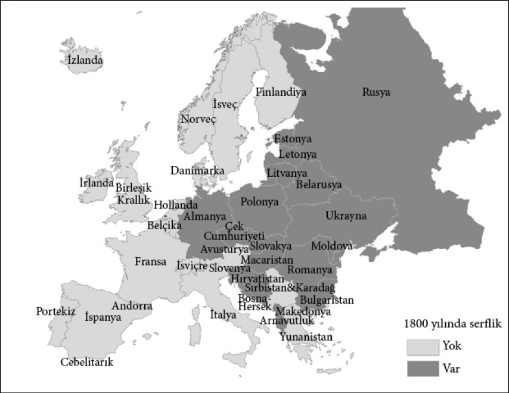
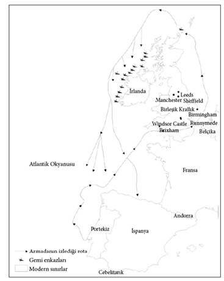

4

Küçük farklılıklar ve kritik
dönemeçler: Tarihin ağırlığı
Vebanın yarattığı dünya
1346’da hıyarcıklı veba, Kara Ölüm, Don Nehri’nin Karadeniz’e dökülen ağzındaki bir liman şehri olan Tana’ya ulaştı. Sıçanların üstünde yaşayan pirelerin taşıdığı veba, Asya’nın büyük ticaret arteri İpek Yolu boyunca seyahat eden tacirler tarafından Çin’den getirilmişti. Cenevizli tacirler sayesinde, sıçanlar kısa sürede pireleri ve vebayı Tana’dan tüm Akdeniz’e yaymaya başlamıştı. Veba, 1347 başlarında Konstantinopolis’e ulaştı. 1348 baharında Fransa, Kuzey Afrika ve İtalya’da yayılıyordu. Görüldüğü her bölgede nüfusun yaklaşık yarısını yok etti. Vebanın Floransa’ya gelişine bizzat tanıklık eden İtalyan yazar Giovanni Boccaccio, daha sonra şöyle yazacaktı:
Şiddeti karşısında insanoğlunun tüm bilgeliği ve mahareti faydasızdı (...) Veba feci sonuçlarını dehşet verici ve olağanüstü bir biçimde sergilemeye başladı. Burun kanamasının kaçınılmaz bir ölüme ait bariz bir alamet sayıldığı Doğu’daki gibi bir seyir göstermedi. Aksine, ilk belirtileri kasık ve koltukaltında kimisi yumurta biçimli kimisi de yaklaşık bir elma büyüklüğündeki birtakım şişliklerin belirmesiydi (...) Daha sonraları hastalığın belirtileri değişti ve pek çok insan kollarında, kalçalarında ve vücutlarının başka bölümlerinde koyu lekeler ve çürükler bulmaya başladı (...) Bu illete karşı (...) hekimlerin verdiği tavsiyeler ve ilaçların gücü fayda etmiyordu (...) Ve çoğu durumda ölüm, tarif ettiğimiz belirtilerin görülmesini müteakip üç gün içinde vuku buluyordu.
İngiltere halkı vebanın kendilerine doğru ilerlediğini biliyordu ve yaklaşan kıyametin farkındaydı. 1348 Ağustos ortasında, Kral III. Edward, Canterbury Başpiskoposu’ndan dualar tertip etmesini istedi ve pek çok piskopos, insanların yaklaşan felaketle başa çıkmalarına yardımcı olmak amacıyla papazlarına kiliselerde yüksek sesle okumaları için mektuplar yazdılar.
Bath Piskoposu Shrewsbury’li Ralph, papazlarına şunları yazıyordu:
Yüce Tanrı, günahlarından arındırmak istediği evlatlarını gök gürültüsü, yıldırım ve başka musibetler kullanarak cezalandırır. Binaenaleyh, Doğu’dan gelen feci bir kıranın komşu krallığa varmış olması nedeniyle korkarız ki, yürekten ve biteviye dua etmediğimiz takdirde, benzer bir kıran zehirli kollarını bu krallığa da uzatacak ve halkını kırıp perişan edecektir. Bu nedenle hepimiz dualar okuyarak Tanrı’nın huzurunda günah çıkarmalıyız.
Hiçbir işe yaramadı. Veba İngiltere’yi vurdu ve nüfusun yarısını yok etti. Bu tür felaketlerin toplumsal kurumlar üzerinde çok büyük etkileri olabilmektedir. Anlaşılabilir nedenlerden ötürü çok sayıda insan aklını kaçırdı. Boccaccio, “Bazıları bu dehşet verici uğursuzluğu savuşturmanın şaşmaz yolunun kendini içkiye vurmak, hayatın doyasıya tadını çıkarmak, şarkı söyleyip âlem yapmak, her fırsatta tüm tutkularını tatmin etmek ve olup biteni koca bir şaka olarak görüp omuz silkmek olduğunu düşünüyordu (...) ve bu, izleyen dönemde sağ kalan kadınların neden daha az iffetli olduğunu açıklıyor” diye yazmaktadır. Yine de, vebanın Ortaçağ Avrupa toplumu üzerinde sosyal, ekonomik ve siyasal açıdan dönüştürücü bir etkisi de vardı.
14. yüzyılın sonunda Avrupa, Roma İmparatorluğu’nun yıkılmasının ardından ilk defa Batı Avrupa’da görülen bir toplumsal organizasyon olan feodal bir yapıya sahipti. Bu yapı, kral ve altındaki lordların en alttaki köylülerle hiyerarşik ilişkisine dayanıyordu. Toprağın sahibi kraldı ve onu askeri hizmetleri karşılığında lordlara tahsis ediyordu. Lordlar da bu toprakları, geniş ölçüde angaryaya zorlanacak ve bu esnada çeşitli ceza ve vergilere tabi tutulacak köylülere paylaştırıyordu. “Servile”10 statülerinden dolayı “serf” olarak adlandırılan köylüler toprağa bağlıydılar. Sadece toprak sahibi değil, aynı zamanda hâkim, jüri ve kolluk kuvveti olan efendilerinin izni olmadan başka bir yere gitmeleri söz konusu değildi. Bu, zenginliğin çok sayıda köylüden az sayıda soyluya doğru aktığı son derece sömürücü bir sistemdi.
Vebanın yarattığı emek kıtlığı, feodal yapıyı temellerinden sarstı. Köylüleri bazı şeylerin değişmesini talep etmek için cesaretlendirdi. Örneğin, Eynsham Manastırı’nda köylüler kendilerine kesilen para cezalarının ve angaryaların azaltılmasını talep ettiler. İstediklerini elde ettiler ve yeni anlaşmaları “1349’daki kıranda manorda sadece iki vassal kaldı ve onlar da o tarihte baş keşiş ve manor lordu olan Upton’lu Nicholas kendileriyle yeni bir anlaşma yapmadığı takdirde çıkmak istediklerini ifade ettiler” açıklamasıyla başladı. Upton’lu Nicholas isteklerini yerine getirmişti.
Eynsham’da yaşananlar her yerde cereyan ediyordu. Köylüler angaryadan ve lordlarına karşı yerine getirmek zorunda oldukları pek çok yükümlülükten kurtulmaya başlamışlardı. Ücretler yükseliyordu. Gidişata bir son vermek isteyen hükümetin 1351’de çıkardığı İşçi Yasası şöyle başlıyordu:
Başta işçiler ve hizmetliler olmak üzere halkın büyük bir kısmının kıranda ölmesi nedeniyle, hizmetlilerin azlığını ve efendilerinin içinde bulunduğu zor durumu gören bazıları, fahiş ücretler almadıkça hizmet etmeye istekli değiller (...) Başta çiftçiler olmak üzere, bu türden işçilerin yokluğundan kaynaklanabilecek vahim olumsuzlukları dikkate alarak, (... ) İngiltere Krallığı’ndaki tüm erkek ve kadınların kendilerine bakmaya uygun görülmüş kişilere hizmet etmelerini ve saltanatımızın yirminci yılında ya da bu tarihten beş ya da altı yıl önce aldıkları ücret, yem parası, ödül ya da maaşı almalarını uygun görüyoruz.
Yürürlükteki yasa, ücretleri Kara Ölüm’den önce ödenen seviyelerde tutmayı amaçlıyordu. İngiliz elitlerinin başlıca endişesi “ayartma”, yani bir lordun bir diğerinin topraklarında çalışan kısıtlı sayıdaki köylüleri kendi topraklarında çalışmaya ikna etmesiydi. Çözüm, işvereninin rızası olmadan işini bırakana hapis cezası verilmesiydi:
Ve bir biçici ya da nakliyeci ya da başka bir işçi ya da hizmetli; mevkii ve koşulları ne olursa olsun birinin hizmeti için tutulmuş kişi, söz konusu hizmeti uygun görülen sürenin bitiminden önce izin almadan ya da makul bir gerekçe göstermeden bırakırsa hapisle cezalandırılacak ve kimsenin (...) her zamanki ücret, yem parası, ödül ya da maaş miktarından daha fazlasını vermesine ya da almasına izin verilmeyecektir.
İngiliz devletinin Kara Ölüm’ün ardından kurumlarda ve ücretlerde ortaya çıkan değişiklikleri önleme girişimi işe yaramadı. 1381’de Köylü İsyanı patlak verdi ve Watt Tyler önderliğindeki isyancılar Londra’nın büyük kısmını ele geçirdiler. Sonunda isyancılar yenilgiye uğratılıp Tyler idam edilse de bu olayın ardından İşçi Yasası’nın uygulanması için başka bir girişimde bulunulmadı. Feodal emeğe dayalı hizmetler giderek azalırken kapsayıcı bir emek piyasası gelişmeye başladı ve ücretler yükseldi.
Veba dünyanın çoğu bölgesini etkisi altına aldı ve görüldüğü her yerde nüfusun benzer orandaki bir bölümünü yok etti. Bu nedenle, vebanın Doğu Avrupa nüfusu üzerindeki etkisi İngiltere ve Batı Avrupa’dakiyle aynıydı. Toplumsal ve ekonomik güçler de aynı durumdaydı. İşgücü sınırlıydı ve insanlar daha büyük özgürlükler talep ediyordu. Fakat Doğu’da daha güçlü bir karşıt mantık işbaşındaydı. Kapsayıcı bir emek piyasasında daha az insan daha yüksek ücretler anlamına geliyordu. Ancak bu durum, lordlara emek piyasasını sömürülebilir tutmak, köylüleri de köleye çevirmek için daha büyük bir teşvik sağladı. Bu motivasyon, İşçi Yasası’ndan da anlaşıldığı gibi, İngiltere için de geçerliydi. Buna karşın işçiler başlarının çaresine bakacak güce sahipti. Fakat Doğu’da böyle değildi. Vebadan sonra Doğu Avrupa’daki mülk sahipleri büyük toprak parçalarını kendilerine mal ederek zaten Batı Avrupa’dakilerden daha büyük olan topraklarını genişlettiler. Şehirler daha zayıf, nüfus daha az olduğu için işçiler, biraz daha özgür olmak şöyle dursun, ellerindeki özgürlüğün bile tehlikede olduğunu görmeye başladılar.
Vebanın etkileri Batı Avrupa’nın Doğu’da üretilen buğday, çavdar gibi tarım ürünlerine ve besi hayvanlarına talep göstermeye başladığı 1500’lerin sonrasında daha belirgin hale geldi. Amsterdam’a gelen ithal çavdarın yüzde 80’i Elbe, Vistül ve Oder nehirlerinin vadilerinde üretiliyordu. Kısa bir süre sonra, Hollanda’nın gelişen ticaretinin yarısı Doğu Avrupa’yla yapılır hale geldi. Batı’nın talebi arttıkça Doğu’daki mülk sahipleri arzı artırmak için emek piyasası üzerindeki baskılarını yoğunlaştırdılar. “İkinci Serflik” olarak adlandırılan bu dönem, erken Ortaçağ’daki ilk biçimine kıyasla daha belirgin ve şiddetliydi. Lordlar, vassallara ait arazilerden zorla topladıkları vergiyi artırıp gayri safi üretimin yarısına el koydular. 1533’te Polonya-Korczyn’de lordlar için yürütülen tüm işlerin ücretleri ödendi. Fakat 1600’de toplam emeğin neredeyse yarısı angaryaydı. 1500’de Doğu Almanya’daki Mecklenburg’da işçiler yılda yalnızca birkaç gün angarya hizmeti veriyorlardı. Bu zorunluluk 1550’de haftada bir güne, 1600’e gelindiğindeyse haftada üç güne çıkmıştı. İşçilerin çocukları toprak sahipleri için ücret almadan birkaç yıl çalışmak zorundaydı. 1514’te Macaristan’daki toprak sahipleri ülkenin tüm kontrolünü ele geçirdiler ve her işçi için haftada bir gün ücretsiz hizmeti yasalaştırdılar. Bu, 1550’de iki güne çıktı, yüzyılın sonunda ise üç günü buldu. O tarihte söz konusu yasalara tabi olan serfler kırsal nüfusun yüzde 90’ını oluşturuyordu.
1346’da Batı Avrupa ile Doğu Avrupa arasında siyasal ve ekonomik kurumlar bakımından az sayıda farklılık olsa da 1600’e gelindiğinde ayrı dünyalara dönüşmüşlerdi. Batı’da işçiler feodal zorunluluklardan, ceza ve kurallardan muaftı ve gelişmekte olan piyasa ekonomisinde kilit bir rol oynuyorlardı. Doğu’dakiler de bir tür ekonominin parçasıydılar, fakat Batı’nın yiyecek ve tarım ürünleri taleplerini karşılamaya mecbur bırakılmış serfler olarak. Bu bir piyasa ekonomisiydi, fakat kapsayıcı bir örneği değildi. Bu kurumsal farklılık, başlarda bu bölgeler arasında var olan küçük farklılıkların oluşturduğu bir durumun sonucuydu: Doğu’da lordlar biraz daha örgütlüydü, hakları biraz daha fazlaydı ve daha fazla konsolide araziye sahiplerdi. Buna karşın şehirler daha zayıf ve küçük, köylüler daha az örgütlüydü. Tarihin geniş çerçevesinden bakıldığında bunlar küçük farklılıklardır. Yine de, feodal yapı Kara Ölüm’le sarsıldığında Doğu ve Batı arasındaki bu küçük farklılıklar bu bölgelerde yaşayanların hayatları ve gelecekte kurumsal gelişimin izleyeceği yol için son derece önemli sonuçlar doğurdu.
Kara Ölüm, bir kritik dönemece, yani toplumun mevcut ekonomik ya da siyasal dengesini bozan büyük bir olaya ya da etkenler bütününe iyi bir örnek teşkil eder. Bir kritik dönemeç, bir ulusun rotasında keskin dönüşlere yol açabilecek iki tarafı keskin kılıçtır. Bir yandan, İngiltere’de olduğu gibi, sömürücü kurumların döngüsünden kurtulup daha kapsayıcı kurumların ortaya çıkmasının önünü açabilir. Öte yandan, Doğu Avrupa’da yaşanan İkinci Serflik döneminde olduğu gibi sömürücü kurumların oluşumunu azdırabilir de.
Tarihin ve kritik dönemeçlerin ekonomik ve siyasal kurumları nasıl şekillendirdiklerini anlamak, bizi yoksulluk ve zenginliğin kökenlerine ilişkin daha yetkin bir kurama götürür. Ayrıca, bugünkü duruma ve neden diğerleri başaramazken bazı ulusların kapsayıcı ekonomik ve siyasal kurumlara geçebildiğine açıklama getirebilmemizi sağlar.
Kapsayıcı kurumların inşası
İngiltere, 17. yüzyılda gerçekleştirdiği istikrarlı ekonomik büyüme atılımıyla diğer ülkeler arasında benzersiz bir konuma sahipti. Büyük ekonomik değişiklikleri, önceki toplumların hepsinden daha kapsayıcı bir dizi ekonomik ve siyasal kurumu beraberinde getiren bir siyasal devrim izledi. Bu kurumların yalnızca ekonomik teşvikler ve refah için değil aynı zamanda refahtan yararlanacaklar için de önemli sonuçları olacaktı. Bir mutabakata dayanmaktan ziyade, güç için rekabet eden, birbirlerinin otoritesiyle çekişen ve kendi lehlerine kurumlar yapılandırmaya çalışan farklı gruplar arasında süren yoğun çatışmaların sonucuydular. 16. ve 17. yüzyılın kurumsal mücadelelerinin zirvesini ise dönüm noktası niteliğindeki iki olay oluşturuyordu: 1642-1651 yılları arasındaki İngiliz İç Savaşı ve özellikle 1688’deki Görkemli Devrim.
Görkemli Devrim, kralın ve yönetici sınıfın gücünü kısıtladı ve parlamentoyu ekonomik kurumları belirleyecek güçle donattı. Aynı zamanda siyasal sitemi geniş halk kesimlerine açarak devletin işlevleri üzerinde kayda değer bir etkiye sahip olmalarını sağladı. Çoğulcu bir toplum yaratmak için temel niteliğindeydi ve siyasal merkezileşmeyi hızlandırdı. Dünyanın ilk kapsayıcı siyasal kurumlar dizisinin ortaya çıkmasını sağladı.
Bunun sonucunda, ekonomik kurumlar da daha kapsayıcı bir hale dönüşmeye başladı. 17. yüzyılın başında İngiltere’de ne kölelik ne de Feodal Ortaçağ’ın serflik sistemi gibi sert ekonomik kısıtlamalar mevcuttu. Buna rağmen, insanların girişebileceği ekonomik faaliyetler üzerinde pek çok kısıtlama vardı. Hem iç hem de dış ekonomi tekellerin baskısı altındaydı. Devlet keyfi vergilendirme uyguluyordu ve yargı sistemini kendi çıkarları için yönlendiriyordu. Çoğu arazi satmayı imkânsız, yatırım yapmayı ise riskli hale getiren arkaik mülkiyet hakları formlarına hapsolmuştu.
Bu durum Görkemli Devrim’in ardından değişti. Rejim yatırım, ticaret ve yenilik için teşvikler sunan bir dizi ekonomik kurumu hayata geçirdi. Fikri mülkiyet haklarını kararlılıkla uygulamaya koydu ve böylelikle yenilikler için büyük bir itici güç oluşturdu. Asayişi sağladı. İngiliz kanunlarının tüm vatandaşlar için geçerli olması tarihsel olarak benzeri görülmemiş bir şeydi. Keyfi vergilendirmeye son verildi ve tekeller neredeyse tümüyle ortadan kaldırıldı. İngiliz devleti ticari etkinlikleri şiddetle destekledi ve yalnızca sanayi faaliyetlerinin genişlemesinin önündeki engelleri kaldırmakla kalmayıp İngiliz donanmasının tüm gücünü ticari çıkarların korunmasına seferber ederek yerli sanayiyi geliştirmeye çalıştı. Mülkiyet haklarının akılcılaştırılması sayesinde özellikle yollar, kanallar ve sonraları sanayinin büyümesinde hayati öneme sahip olduğu ortaya çıkacak demiryollarıyla altyapı tesis edildi.
Bu temeller insanlar üzerinde son derece harekete geçirici bir rol oynadı, refah düzeyini artırdı ve Sanayi Devrimi’nin yolunu açtı. Her şeyden önce Sanayi Devrimi, önceki yüzyıllarda Avrupa’da biriken bilgiyi kullanan büyük teknolojik ilerlemelere dayanıyordu. Bu, geçmişten radikal bir kopuştu ve bilimsel araştırmalar ve birkaç eşsiz insanın yeteneği sayesinde gerçekleşmişti. Bu devrimin asıl gücü, teknolojinin geliştirilip uygulanmasına yönelik kârlı fırsatlar yaratan bir piyasadan geliyordu. İnsanların yeteneklerini doğru iş alanlarına aktarmasına olanak tanıyan, piyasaların kapsayıcı doğasıydı. Ayrıca, iş alanlarında yeni teknolojiler uygulamaya koyup bu teknolojileri kullanabilecek beceride işçiler bulacak vizyona sahip girişimcilerin ortaya çıkması, nispeten yüksek eğitim düzeyi –en azından o zamanın koşullarına göre– nedeniyle gerçekleştiği için eğitim ve beceriye de dayanıyordu.
Sanayi Devrimi’nin İngiltere’de Görkemli Devrim’den birkaç on yıl sonra başlaması bir rastlantı değildir. James Watt (buhar makinesini geliştirdi), Richard Trevithick (ilk buharlı lokomotifi inşa etti), Richard Arkwright (iplik eğirme makinesini icat etti) ve Isambard Kingdom Brunel (devrim niteliğindeki birkaç buharlı geminin yaratıcısı) gibi büyük mucitler kendi fikirlerine dayanan ekonomik fırsatların peşine düşme imkânı buldular; fikri mülkiyet haklarının korunacağından emindiler ve yeniliklerinin kârlı bir biçimde satılıp kullanıldığı pazarlara ulaşabiliyorlardı. 1775’te James Watt, “ateş makinesi” adını verdiği buhar makinesinin patentini yenilettikten hemen sonra babasını şunları yazıyordu:
Sevgili Babacığım,
Bir dizi farklı ve şiddetli itirazdan sonra yeni ateş makinelerimin mülkiyetini Büyük Britanya ve plantasyonları genelinde yirmi beş yıl süreyle bana ve ortaklarıma tahsis eden meclis kararını sonunda elde ettim. Hâlihazırda kayda değer ölçüde talep olduğundan, benim için son derece kazançlı olacağını umuyorum.
Bu mektup iki şeyi ortaya koyuyor. Birincisi Watt, Büyük Britanya ve plantasyonlarındaki, yani denizaşırı İngiliz sömürgelerindeki “kayda değer ölçüde talep” nedeniyle piyasada yakalayacağı fırsatların beklentisiyle motive olmuştu. İkincisi, istediğini elde etmek için bireylerin ve mucitlerin başvurularına duyarlılık gösteren parlamentoyu etkilemeyi başarmıştı.
Teknolojik ilerlemeler, iş alanlarındaki büyüme ve yatırım isteği, beceri ve yeteneklerin etkin kullanımı; bütün bunlar İngiltere’nin geliştirdiği kapsayıcı ekonomik kurumlar sayesinde mümkün hale geldi. Bu kurumlar da İngiltere’nin kapsayıcı siyasal kurumları üzerine inşa edildi.
İngiltere’nin bu kapsayıcı siyasal kurumları geliştirmesi iki etkene bağlıdır. Bunlardan ilki, merkezileşmiş bir devletin de dahil olduğu siyasal kurumlardı. Bu kurumlar, Görkemli Devrim’in başlangıcıyla İngiltere’yi bir sonraki radikal –aslına bakılırsa benzeri görülmemiş– adıma götürdü. Bu etken İngiltere’yi dünyanın büyük çoğunluğundan ayırsa da Fransa ve İspanya gibi Batı Avrupa ülkelerinden belirgin ölçüde farklılaştırmıyordu. Daha önemli olansa ikinci etkendi. Görkemli Devrim’e zemin hazırlayan olaylar, monarşi ve yönetim üzerinde uzun ömürlü kısıtlamalar uygulayabilecek geniş ve güçlü bir koalisyon meydana getirdi ve onlar da bu koalisyonun taleplerine açık olmak zorunda kaldılar. Bu durum, çoğulcu siyasal kurumlara temel oluşturdu ve bu kurumlar da sonraları ilk Sanayi Devrimi’ne dayanak oluşturacak ekonomik kurumların gelişimine olanak sağladı.
Önem taşıyan küçük farklılıklar
Arkwrigt, Watt ve onları izleyen pek çok mucidin geliştirdiği yeni teknolojiler yalnızca bazı ülkelerde hayata geçirildiği için dünya eşitsizliği İngiliz Sanayi Devrimi’yle önemli ölçüde arttı. Farklı ülkelerin onları zayıf düşürecek ya da sürekli ekonomik büyüme göstermelerini sağlayacak bu teknoloji dalgasına verdiği tepki, büyük ölçüde kurumlarının farklı tarihsel gelişim süreçlerine göre şekillendi. 18. yüzyılın sonuna gelindiğinde artık tüm dünyada siyasal ve ekonomik kurumlar bakımından belirgin farklılıklar mevcuttu. Peki, bu farklılıkların kaynağı neydi?
1688’e gelindiğinde İngiltere’nin siyasal kurumları Fransa ve İspanya’nınkilere kıyasla çok daha çoğulcu bir rota izliyordu. Oysa yüzyıl kadar geriye, 1588’e gidersek aradaki farklar yok denecek kadar azalır. Üç ülke de mutlakiyetçi hükümdarlarca yönetiliyordu: İngiltere’de I. Elizabeth, İspanya’da Cortes ve Fransa’da III. Henry. Üçü de, daha fazla hak talep eden ve monarşi üzerinde kontrol sağlamaya çalışan halk meclisleriyle –İngiltere’de Parlamento, İspanya’da Meclis ve Fransa’da Genel Meclis– mücadele halindeydi. Bu meclisler az çok farklı güçlere ve faaliyet alanlarına sahipti. Sözgelimi, İngiliz Parlamentosu ve İspanyol Meclisi’nin vergi üzerinde gücü varken Fransız Genel Meclisi’nin yoktu. İspanya için bu konunun çok bir önemi yoktu, çünkü 1492’nin ardından İspanyol kraliyeti muazzam bir Amerikan imparatorluğuna sahipti ve büyük ölçüde burada bulduğu altın ve gümüşten nasipleniyordu. İngiltere içinse durum farklıydı. I. Elizabeth’in ekonomik özgürlüğü çok daha sınırlıydı, bu nedenle daha fazla vergi için parlamentoya yakarması gerekiyordu. Karşılığında parlamento da çeşitli imtiyazlar, özellikle de Elizabeth’in tekel kurma hakkı üzerinde kısıtlamalar talep ediyordu. Bu, zaman içinde parlamentonun kazanacağı bir mücadeleydi. İspanya’da ise meclis benzer bir mücadeleden yenik çıktı. Ticaret tekelleşmekle kalmadı, İspanyol monarşisi tarafından tekelleştirildi.
Başlangıçta küçük gibi görünen bu farklılıklar, 17. yüzyılda önem kazanmaya başladı. Amerika’nın 1492’de keşfedilmesine ve Vasco de Gama’nın 1498’de Afrika’nın güney ucundaki Ümit Burnu’nu dolanarak Hindistan’a ulaşmasına karşın, başta Atlantik olmak üzere dünya ticaretindeki muazzam genişleme ancak 1600’den sonra kendini göstermeye başladı. Kuzey Amerika’daki İngiliz koloniciliği ilk olarak 1585’te Roanoke’de, bugünkü Kuzey Carolina’da başladı. 1600’de İngiliz Doğu Hindistan Kumpanyası kuruldu. Onu 1602’de Hollandalı muadili izledi. 1607’de Virginia Kumpanyası Jamestown sömürgesini kurdu. 1620’lerde Karayipler sömürgeleştirildi ve 1627’de Barbados zaptedildi. Bugünün Kanada’sı Yeni Fransa’nın başkenti olarak Quebec City’yi kuran Fransa da Atlantik’te yayılıyordu. Bu ekonomik yayılmanın kurumlar açısından sonuçları başlangıçtaki küçük farklılıklardan ötürü İngiltere için İspanya ve Fransa’ya kıyasla çok farklıydı.
I. Elizabeth ve halefleri, Amerika’yla sürdürülen ticareti tekelleştiremediler. Diğer monarşiler ise bunu başardılar. Dolayısıyla, Atlantik ticareti ve sömürgecilik İngiltere’de kraliyetle çok az bağı olan geniş bir varlıklı tüccarlar grubu yaratırken İspanya ve Fransa’daki durum böyle değildi. İngiliz tüccarlar kraliyet kontrolünden rahatsızdılar, siyasal kurumlarda değişiklik ve kraliyet imtiyazlarında kısıtlama talep ettiler. İngiliz İç Savaşı’nda ve Görkemli Devrim’de kritik bir rol üstlendiler. Benzer çatışmalar her yerde yaşandı. Örneğin Fransız kralları 1648-1652 yılları arasında Fronde İsyanı’yla karşılaştılar. Aradaki fark, İngiltere’deki mutlakıyet karşıtlarının İspanya ve Fransa’daki mutlakiyet karşıtlarına kıyasla başarı şansının daha yüksek olmasıydı; çünkü nispeten daha varlıklı ve sayıca daha çoktular.
17. yüzyılda İngiliz, Fransız ve İspanyol toplumlarının izledikleri farklı yollar, kritik dönemeçlerdeki küçük kurumsal farklılıklar arasındaki etkileşiminin önemini sergiler. Kritik dönemeçlerde büyük bir olay ya da bazı etkenlerin bir araya gelişi bir ülkenin var olan siyasal ya da ekonomik güç dengesini bozar. Bunlar yalnızca bir ülkeyi etkileyebilir; örneğin, 1976’da Başkan Mao Zedung’un ölümü ilk önce yalnızca komünist Çin için bir kritik dönemeç oluşturdu. Yine de, kritik dönemeçler genellikle bütün bir ülkeler topluluğunu etkiler; tıpkı sömürgeciliğin ve sömürgesizleşmenin dünyanın büyük bölümünü etkilemesinde olduğu gibi.
Bu tür kritik dönemeçler önemlidir, çünkü aşamalı gelişmelere karşı sömürücü siyasal ve ekonomik kurumların sinerjisinden ve birbirlerine verdikleri destekten kaynaklan zorlu engeller söz konusudur. Bu etkileşim döngüsünün sürekliliği bir kısır döngü yaratır. Statükodan yararlananlar varlıklı ve iyi örgütlüdür; ekonomik ayrıcalıklarını ve siyasal güçlerini ellerinden alacak büyük değişikliklerle etkin bir şekilde savaşabilirler.
Kritik bir dönemeçte önem taşıyan küçük farklılıklar çok farklı tepkileri harekete geçiren ilk kurumsal farklılıklardır. İngiltere, Fransa ve İspanya’daki nispeten küçük kurumsal farklılıkların bütünüyle farklı gelişim rotalarına yol açmalarının nedeni budur. Bu rotalar, Atlantik ticaretinin Avrupalılara sunduğu ekonomik fırsatların oluşturduğu kritik dönemecin ürünüydü.
Küçük kurumsal farklılıklar kritik dönemeçlerde büyük önem arz etseler de, tüm kurumsal farklılıklar küçük değildir ve doğal olarak daha büyük kurumsal farklılıklar bu tür kritik dönemeçlerde daha da büyük ayrışmalara yol açarlar. 1588’de İngiltere ile Fransa arasındaki kurumsal farklılıklar küçük olsa da Batı ve Doğu Avrupa arasındaki farklılıklar çok daha büyüktü. Batı’da İngiltere, Fransa ve İspanya gibi güçlü merkezi devletler henüz olgunlaşmamış anayasal kurumlara sahipti (Parlamento, Meclis ve Genel Meclis). Ayrıca serfliğin olmayışı gibi ekonomik kurumların temelinde yatan benzerlikler de mevcuttu.
Doğu Avrupa ise farklı bir konuydu. Örneğin, Lehistan-Litvanya Krallığı, “Szlachta” adlı elit bir sınıf tarafından yönetiliyordu. Öylesine güçlüydüler ki, kral için seçim bile düzenliyorlardı. Bu, XIV. Louis’nin, Güneş Kral’ın yönetimindeki Fransa’da olduğu gibi bir mutlakıyet değildi; fakat yine de bir elitin, sömürücü siyasal kurumların mutlakıyetiydi. Szlachta’nın yönettiği büyük ölçüde kırsal bir toplumdu ve bu toplumun çoğunluğunu hareket özgürlüğü ya da ekonomik fırsatları olmayan serfler oluşturuyordu. Daha doğuda Rusya İmparatoru Büyük Petro, XIV. Louis’nin dahi başaramayacağı kadar yoğun ve sömürücü bir mutlakıyet sistemi oturtuyordu. Harita 8, 19. yüzyılın başında Doğu ve Batı Avrupa arasındaki ayrımın boyutlarını gayet net bir biçimde görmemizi sağlıyor. Harita, 1800’de bir ülkede hâlâ serfliğin olup olmadığını gösteriyor. Koyu renkli ülkelerde varken açık renklilerde yok. Doğu Avrupa koyu renkte; Batı Avrupa ise açık.
Yine de Batı Avrupa kurumları Doğu’dakilerden her zaman o kadar da farklı değildi. Daha önce gördüğümüz gibi, 1346’da Kara Ölüm’ün patlak vermesiyle 14. yüzyılda birbirinden ayrılmaya başladılar. Doğu ve Batı Avrupa’daki siyasal ve ekonomik kurumlar arasında küçük farklılıklar vardı. Hatta İngiltere ve Macaristan aynı ailenin, Avengin Hanedanı’nın üyeleri tarafından yönetildi. Kara Ölüm’ün ardından ortaya çıkan daha önemli kurumsal farklılıklar ise 17., 18. ve 19. yüzyıllarda Doğu ve Batı Avrupa arasında meydana gelen çok daha önemli bir ayrıma temel oluşturacaktı.
Peki, her şeyden önce, bu ayrım sürecini başlatan küçük kurumsal farklılıklar nerede ortaya çıkmıştı? Neden 14. yüzyılda Doğu Avrupa Batı Avrupa’dan farklı siyasal ve ekonomik kurumlara sahipti? Neden İngiltere’de kraliyet ve parlamento arasındaki güç dengesi Fransa ve İspanya’dakinden farklıydı? Sonraki bölümde göreceğimiz gibi, modern toplumumuzdan çok daha az karmaşık toplumlar bile bireylerinin yaşamları üzerinde çok güçlü etkileri olan siyasal ve ekonomik kurumlar yaratırlar. Bu durum, tarım yapmayan hatta belirli kalıcı bir yerleşimleri bile olmayan avcı-toplayıcı toplumlar için bile –günümüz Botsvana’sının San halkı gibi hayatta kalan örneklerinden bildiğimiz gibi– geçerlidir.
Kurumları aynı olan iki toplum yoktur; her birinin farklı adetleri, farklı mülkiyet hakları sistemleri ve öldürülen bir hayvanı ya da başka bir gruptan çalınan ganimeti paylaşmak için farklı yöntemleri vardır ve olacaktır. Bazıları yaşlıların otoritesini tanıyacak, bazıları tanımayacaktır; bazıları erken evrede belirli bir siyasal merkeziyet düzeyine erişecek, bazıları erişemeyecektir. Toplumlar sürekli olarak ekonomik ve siyasal çatışmalara maruz kalacak ve bu çatışmalar belirli tarihsel farklılıklar, bireysel roller ya da yalnızca rastlantısal etkenler nedeniyle farklı biçimlerde çözüme kavuşacaktır.

Harita 8: 1800 yılında Avrupa’daki serflik.
Bu farklılıklar başlangıçta çoğu kez küçüktür; fakat birikir ve bir kurumsal sürüklenme süreci doğururlar. İki tekil organizma popülasyonunun bir genetik sürüklenme sürecinde rastlantısal genetik mutasyonların birikimine bağlı olarak birbirlerinden yavaşça uzaklaşmalarında olduğu gibi, diğer yönleriyle birbirine benzeyen iki toplum da kurumsal açıdan yavaşça birbirlerinden uzaklaşacaktır. Yine de, tıpkı genetik sürüklenmede olduğu gibi, kurumsal sürüklenmenin de önceden belirlenmiş bir rotası yoktur ve birikimsel olması bile gerekli değildir; yüzyıllar içinde somut, bazen önemli farklılıklara yol açabilir. Kurumsal sürüklenmenin yarattığı farklılıklar bilhassa önemli hale gelirler çünkü kritik dönemeçlerde toplumların ekonomik ve siyasal değişimlere gösterdikleri reaksiyona etki ederler.
Dünyanın dört bir yanında görülen, birbirinden son derece farklılaşmış ekonomik gelişim örüntüleri, kritik dönemeçlerle kurumsal sürüklenme arasındaki karşılıklı etkileşime bağlıdır. Bazen uzun bir kurumsal sürüklenme sürecinin biçimlendirdiği bazen de önceki kritik dönemeçlere gösterilen farklı reaksiyonlardan kaynaklanan mevcut siyasal ve ekonomik kurumlar, gelecekteki değişimin şekillendirilmesi için bir örs vazifesi görürler. Hem Kara Ölüm hem de 1600’den sonra dünya ticaretinde görülen genişleme Avrupa güçleri için büyük kritik dönemeçlerdi ve farklı başlangıç kurumlarıyla etkileşime girerek büyük bir ayrışma yarattılar. 1346’da Batı Avrupa’da köylüler Doğu Avrupa’da olduğundan daha fazla güce ve özerkliğe sahip oldukları için Kara Ölüm Batı Avrupa’da feodalizmin çözülmesine, Doğu Avrupa’da ise İkinci Serflik’e yol açtı. 14. yüzyılda Doğu ve Batı Avrupa ayrışmaya başladığından 17., 18. ve 19. yüzyılın ekonomik fırsatları da Avrupa’nın bu farklı bölümleri için tamamen farklı sonuçlar doğurdu. 1600’de İngiltere’deki kraliyetin kontrol gücü Fransa ve İspanya’dakilere kıyasla daha zayıf olduğundan Atlantik ticareti Fransa ve İspanya’da monarşileri güçlendirirken İngiltere’de yeni kurumların ve daha büyük bir çoğulculuğun önünü açtı.
Tarihin olumsal rotası
Mevcut ekonomik ve siyasal kurumlar güç dengesini şekillendirip siyasal açıdan neyin olanaklı olduğunu gösterirken kritik dönemeçlerdeki olayların sonuçları da tarihin ağırlığıyla şekillenir. Bununla birlikte, sonuç tarihsel olarak önceden belirlenmiş değildir; olumsaldır. Bu gibi dönemlerde izlenecek kesin kurumsal gelişim rotası ise karşıt kuvvetlerin hangisinin başarıya ulaşacağına, hangi grupların etkin koalisyonlar oluşturacağına ve hangi liderlerin olayları kendi çıkarları doğrultusunda biçimlendirebileceklerine bağlıdır.
Olumsallığın rolü, İngiltere’deki kapsayıcı kurumların kökenleriyle örneklendirilebilir. Kraliyetin gücünü sınırlandırmak ve 1688’deki Görkemli Devrim’de daha çoğulcu kurumlar oluşturmak için uğraşan grupların zaferinde, mesele yalnızca ortada önceden belirlenmiş hiçbir şeyin olmaması değildi, aynı zamanda bu siyasal devrime götüren yolun kaderi de tamamen olumsal olaylara bağlıydı. Kazanan grupların zaferi, kraliyete muhalefet eden tüccarları zenginleştirip teşvik eden Atlantik ticaretinin yükselişinin meydana getirdiği kritik dönemeçle sıkı sıkıya ilişkiliydi. Fakat bundan 100 yıl önce İngiltere’nin denizler üzerinde hâkimiyet kuracağı, Karayiplerin ve Kuzey Amerika’nın çoğu bölgesini sömürgeleştireceği ya da Amerika’yla ve Doğu’yla sürdürülen kârlı ticaretin büyük bölümünü ele geçireceği öngörülebilir olmaktan çok uzaktı. Ne I. Elizabeth ne de ondan önceki diğer Tudor hükümdarları güçlü ve birleşik bir donanma inşa etmişlerdi. İngiliz donanması hükümet izniyle çalışan korsan gemilere ve bağımsız ticaret gemilerine dayanıyordu ve gücü İspanyol filosundan çok daha azdı. Yine de Atlantik’teki kâr, okyanus üzerindeki İspanyol tekeline meydan okuyan bu izinli korsanları cezbetti. 1588’de İspanyollar hem tekellerine karşı girişilen bu meydan okumalara hem de İngilizlerin o tarihte İspanyollara karşı bağımsızlık savaşı veren İspanyol Hollandası’na müdahalesine bir son vermek istediler.
İspanyol hükümdarı II. Philip, Medina Sidonia Dükü komutasındaki güçlü bir filoyu gönderdi. İspanyolların İngilizleri kesin bir yenilgiye uğratması, Atlantik’teki tekellerini kuvvetlendirmeleri ve muhtemelen I. Elizabeth’i tahttan indirmeleri, hatta belki de en sonunda Britanya Adaları’nın kontrolünü ele geçirmeleri, birçoğuna kaçınılmaz bir sonuç gibi görünmüştü. Oysa bambaşka bir şey oldu. Kötü hava ve daha deneyimli bir komutan ölünce son dakikada göreve getirilen Sidonia’nın stratejik hataları İspanyol Armadası’nın üstünlüğünü kaybetmesine yol açtı. İngilizler tüm zorluklara rağmen daha güçlü rakiplerinin filosunun büyük kısmını imha ettiler. Artık Atlantik denizi İngilizlere daha eşit şartlar sunuyordu. İngilizlerin bu beklenmedik zaferi olmasaydı dönüştürücü kritik dönemeci meydana getirecek ve 1688 sonrası İngiltere’sinin kayda değer ölçüde çoğulcu siyasal kurumlarını ortaya çıkaracak olaylar asla cereyan etmezdi. Harita 9, Armada İngiliz adalarının etrafında kovalanırken batırılan İspanyol gemilerinin enkazlarının bulundukları yerleri gösteriyor.
Elbette, 1588’de kimse şanslı İngiliz zaferinin sonuçlarını öngöremezdi. O tarihte muhtemelen çok az kişi bunun 100 yıl sonra büyük bir siyasal devrimle sonuçlanacak bir kritik dönemeç oluşturacağını anlamıştır.
Her kritik dönemecin başarılı bir siyasal devrimle sonuçlanacağı ya da daha iyiye götürecek bir değişime yol açacağı varsayılmamalıdır. Tarih, Alman sosyolog Robert Michels’in “Oligarşinin tunç yasası” olarak adlandırdığı, son derece kötücül bir kısır döngü biçimi olan bir örüntüyle, bir tiranın yerine bir başka tiranı getiren devrimlerin ve radikal hareketlerin örnekleriyle doludur. İkinci Dünya Savaşı’nı izleyen birkaç on yılda sömürgeciliğin sona ermesi pek çok eski sömürge için kritik dönemeçler meydana getirdi. Ne var ki, Sahra-altı Afrika’daki vakaların çoğunda ve Asya’da pek çok örnekte, bağımsızlık sonrasının hükümetleri Robert Michels’in kitabından bir sayfa alıp tekrarladılar ve çoğu kez siyasal güç dağılımını ciddi ölçüde daraltarak, kısıtlamaları kaldırarak, ekonomik kurumların yatırım ve ekonomik gelişme için sağladığı zaten az olan teşvikleri baltalayarak seleflerinin suiistimallerini pekiştirdiler. Kritik dönemeçler sadece birkaç durumda, örneğin Botsvana gibi toplumlarda ekonomik büyümeye yol açacak siyasal ve ekonomik bir değişim süreci başlatmak için kullanıldı.

Harita 9: İspanyol Armadası, gemi enkazları ve Dönüm Noktası’nı oluşturan kilit mevkiler.
Kritik dönemeçler sömürücü kurumlardan uzaklaştırmak yerine onlara götürecek büyük değişiklikler de doğurabilir. Her ne kadar kendi etkileşim döngüleri, yani verimli döngüleri olsa da, kapsayıcı kurumlar da izlenen rotayı tersine çevirebilir ve kritik dönemeçteki meydan okumalar nedeniyle aşama aşama daha sömürücü hale gelebilirler –ve bunun olup olmaması da yine olumsaldır. 6. bölümde göreceğimiz gibi, Venedik Cumhuriyeti Ortaçağ’da kapsayıcı siyasal ve ekonomik kurumlar yönünde büyük adımlar attı. Fakat bu tür kurumlar İngiltere’de 1688 Görkemli Devrimi’nden sonra giderek güçlenirken Venedik’te kendilerini en nihayetinde hem ekonomik fırsatları hem de siyasal gücü tekelleştiren dar bir elitin kontrolündeki sömürücü kurumlara dönüştürdüler.
Mevcut durumu anlamak
18. yüzyıl İngiltere’sinde piyasa ekonomisine dayalı kapsayıcı kurumların ve sürekli ekonomik büyümenin ortaya çıkışının etkileri dünyanın dört bir yanında hissedildi, özellikle de İngiltere’nin dünyanın büyük bölümünü sömürgeleştirmesine yol açtığı için. Fakat İngiltere’nin ekonomik büyümesinin etkisi tüm dünyaya yayıldıysa da bu büyümeyi meydana getiren ekonomik ve siyasal kurumlar aynı şekilde yayılmadı. Tıpkı Kara Ölüm’ün Doğu ve Batı Avrupa’da farklı etkiler doğurması gibi ve tıpkı Atlantik ticaretinin genişlemesinin İngiltere ve İspanya için farklı etkiler doğurması gibi Sanayi Devrimi’nin yayılması da tüm dünyada farklı etkiler doğurdu. Etkide belirleyici olan dünyanın farklı bölgelerindeki mevcut kurumlardı ve bu kurumlar gerçekten de birbirlerinden farklıydılar; küçük farklılıklar önceki kritik dönemeçler sayesinde zamanla büyümüştü. Bu kurumsal farklılıklar ve sonuçları, kısır döngüler ve verimli döngülerle –noksanları olsa da– günümüze kadar sürme eğiliminde oldular ve hem dünya eşitsizliğinin nasıl ortaya çıktığını hem de etrafımızdaki mevcut durumun doğasını anlamak için anahtar vazifesi gördüler.
Dünyanın bazı bölgeleri İngiltere’dekilere çok benzeyen kurumlar geliştirdiler; fakat çok farklı bir yol izleyerek. Kurumları her ne kadar Sanayi Devrimi’nin yelken açtığı sıralarda oluşmaya başlamışsa da, bu durum özellikle Avustralya, Kanada ve Birleşik Devletler gibi bazı Avrupalı “yerleşimci koloniler” için geçerliydi. 1. bölümde gördüğümüz gibi, 1607’de Jamestown kolonisinin kurulmasıyla başlayan, Bağımsızlık Savaşı ve Birleşik Devletler Anayasası’nın kabul edilmesiyle doruk noktasına ulaşan süreç, aynı zamanda bir merkezi devletin ve çoğulcu siyasal kurumların ortaya çıkmasına da yol açtığı için İngiltere’de parlamento ve monarşi arasında süren uzun mücadeleyle pek çok ortak özellik taşıyordu. Ardından Sanayi Devrimi hızla bu ülkelere yayıldı.
Benzer tarihsel süreçlerden geçen Batı Avrupa, Sanayi Devrimi sırasında İngiltere’dekine benzer kurumlara sahipti. İngiltere ile diğer ülkeler arasında küçük fakat önemli sonuçlar doğuran farklılıklar vardı. Sanayi Devrimi’nin Fransa’da değil İngiltere’de ortaya çıkmasının nedeni de buydu. Bu devrim daha sonra bütünüyle farklı bir durum yarattı ve Avrupa rejimlerine karşı birbirinden oldukça farklı meydan okumalara yol açtı. Bu da Fransız Devrimi’yle doruğa ulaşan bir dizi yeni çatışmaya yol açtı. Fransız Devrimi, Doğu Avrupa’dakiler daha da uzaklaşırken Batı Avrupa kurumlarının İngiltere’dekilerle birbirlerine yaklaşmasına yol açan başka bir kritik dönemeçti.
Dünyanın geri kalanı farklı kurumsal rotalar izledi. Avrupa sömürgeciliği Amerika’nın kurumsal ayrışımına zemin hazırladı. Birleşik Devletler ve Kanada’da gelişen kapsayıcı kurumların aksine Latin Amerika’da sömürücü kurumlar ortaya çıktı ki, bu da Amerika’da gördüğümüz eşitsizlik örüntülerini açıklıyor. Latin Amerika’daki İspanyol conquistadorlar’ın sömürücü siyasal ve ekonomik kurumları, bölgenin çoğunu yoksulluğa mahkûm ederek varlığını sürdürdü. Bununla birlikte, Arjantin ve Şili için işler bölgedeki çoğu ülkeden daha iyi gitti. Az sayıda yerliye ya da madeni zenginliğe sahiplerdi ve İspanyollar Aztek, Maya ve İnka uygarlıklarının bulunduğu topraklara odaklanırken “ihmal edildiler”. Arjantin’in en yoksul kesiminin ülkenin İspanyol sömürge ekonomisine entegre olan tek bölgesi olan kuzeybatıda bulunması bir rastlantı değildir. Sömürücü kurumların mirası olan kalıcı yoksulluğu, Bolivya ve Peru’da Potosí mita’sının yol açtığı yoksullukla benzeşiyor.
Afrika, Sanayi Devrimi’nin sunduğu fırsatlardan asgari düzeyde yararlanabilen bir bölgeydi. Afrika en azından 1000 yıl boyunca, küçük bölgeler ve sınırlı dönemler dışında teknoloji, siyasal gelişim ve refah bakımından dünyanın gerisinde kalmıştı. Burası merkezi devletlerin çok geç ve çok seyrek bir biçimde kurulduğu bir bölgedir. Kurulanlarsa çoğunlukla Kongo gibi son derece mutlakıyetçidir ve çoğu kez kısa ömürlü olur; genellikle de yıkılır. Afrika bu merkezi devlet yokluğu rotasını, bölgelerine düzen getirmek ve hiç değilse bir parça olsun ekonomik ilerleme gösterebilmek için istikrara benzer hiçbir şey ortaya koyamamış Afganistan, Haiti, Nepal gibi ülkelerle paylaşır. Dünyanın farklı yerlerinde bulunmalarına karşın Afganistan, Haiti ve Nepal kurumsal açıdan Sahra-altı Afrika’nın çoğu ülkesiyle ortak özellikler taşırlar ve bu nedenle günümüzün en yoksul ülkeleri arasındadırlar.
Afrika kurumlarının evrimleşerek bugünkü sömürücü formuna dönüşmesi bir kez daha kritik dönemeçlerin araya girdiği kurumsal sürüklenme sürecini ortaya koyar ancak bu kez, özellikle de Atlantik köle ticaretinin genişlemesi sırasında, son derece olumsuz sonuçlar söz konusudur. Avrupalı tüccarlar geldiğinde Kongo Krallığı için yeni ekonomik fırsatlar doğmuştu. Avrupa’yı dönüştüren uzun mesafeli ticaret Kongo Krallığı’nı da dönüştürmüştü fakat başlangıçtaki kurumsal farklılıklar bir kez daha kendini gösteriyordu. Kongo mutlakıyetçiliği önceleri yalnızca sömürücü ekonomik kurumları aracılığıyla yurttaşlarının tüm tarımsal üretimine el koyup toplum üstünde tahakküm kurarken, sonradan insanları toplu halde köleleştirip Kongo eliti için silah ve lüks mallar karşılığında Portekizlilere satar hale geldi.
Yeni uzun mesafeli ticaret fırsatları, İngiltere ve Kongo arasındaki öncül farklılıklar nedeniyle İngiltere için çoğulcu siyasal kurumlara götürecek bir kritik dönemeç yaratırken, Kongo için mutlakıyetçiliğin ortadan kaldırılmasına yönelik tüm umutları suya düşürdü. Afrika’nın büyük kısmında kölecilikten elde edilen muazzam gelir, yalnızca köleciliğin daha da yoğunlaşmasına ve mülkiyet haklarının daha da emniyetsiz hale gelmesine yol açmakla kalmadı, aynı zamanda savaşların yoğunluk kazanmasına ve mevcut pek çok kurumun yıkımına da neden oldu. Birkaç yüzyıl içinde, tüm merkezileşme süreçleri tamamen tersine döndü ve çoğu Afrika ülkesi büyük ölçüde çöktü. Köle ticaretinden faydalanmak için bazı yeni ve kimi zaman güçlü devletler kurulduysa da temelleri savaş ve talana dayalıydı. Amerika’nın keşfiyle ortaya çıkan kritik dönemeç İngiltere’nin kapsayıcı kurumlar geliştirmesine katkıda bulunmuş olabilir fakat Afrika’daki kurumları daha da sömürücü hale getirdi.
1807’nin ardından köle ticareti büyük ölçüde sona erdiyse de ardından gelen Avrupa sömürgeciliği yalnızca Güney ve Batı Afrika’daki henüz olgunlaşmamış ekonomik modernizasyonu tersine çevirmekle kalmadı, aynı zamanda yerel bir kurumsal reforma yönelik tüm ihtimalleri de yok etti. Bunun anlamı Kongo, Madagaskar, Namibya ve Tanzanya gibi talan, kargaşa ve hatta toplu cinayetlerin hüküm sürdüğü bölgelerin dışında bile Afrika’nın kurumsal rotasını değiştirmek için çok az şansı olduğuydu.
Daha da kötüsü, sömürge yönetiminin yapıları 1960’larda Afrika’yı sömürgecilik döneminin başlangıcındakinden daha karmaşık ve kötücül bir kurumsal mirasla baş başa bıraktı. Çoğu Afrika sömürgesindeki siyasal ve ekonomik kurumların gelişimi, bağımsızlığın bu sömürgelerdeki kurumların ilerlemesi için bir kritik dönemeç yaratmak yerine, ahlaksız liderlere Avrupalı sömürgecilerin yönettiği sömürü faaliyetlerinin kontrolünü ele geçirip daha da yoğunlaştırmaları için fırsat tanıdığı anlamına gelmektedir. Bu yapıların sağladığı siyasal teşvikler, güçlü mutlakıyetçi eğilimler taşıyan fakat yine de bölgelerinde hiçbir merkezi otorite tesis edemeyen devletlerden ve güvence altına alınmamış, yetersiz mülkiyet haklarından oluşan tarihsel kalıbı tekrarlayan bir siyasal üsluba neden oldu.
Sanayi Devrimi hâlâ Afrika’ya yayılmamıştı; çünkü bu kıta sömürücü siyasal ve ekonomik kurumların devamlılığına ve yeniden üretimine dayalı uzun bir kısır döngü tecrübe etmişti. Botsvana bir istisnaydı. İleride göreceğimiz gibi bağımsızlık döneminin ilk başbakanı Seretse Khama’nın büyükbabası Kral Khama, 19. yüzyılda kabilesinin siyasal ve ekonomik kurumlarını modernize etmek için kurumsal değişiklikler başlattı. Pek örneği görülmeyecek bir biçimde, bu değişiklikler sömürgecilik döneminde ortadan kaldırılmadı; bu durum, kısmen Khama ve diğer şeflerin sömürge otoritesine karşı zekice meydan okumalarının sonucunda gerçekleşmişti. Sömürge yönetiminden bağımsızlıklarını kazanmaları şeklinde ortaya çıkan kritik dönemeçle etkileşimleri, Botsvana’nın ekonomik ve siyasal başarısına temel oluşturdu. Bu, küçük tarihsel farklılıkların önemini gösteren bir başka örnekti.
Tarihsel olayları kökleri derinlere inen kuvvetlerin kaçınılmaz sonuçları olarak görmeye yönelik bir eğilim vardır. Ekonomik ve siyasal kurumların tarihinin nasıl kısır ve verimli döngüler yarattığını önemle vurgulamamıza karşın, İngiliz kurumlarının gelişimi bağlamında vurguladığımız gibi, olumsallık daima bir etken olarak kendini gösterebilir. 1940’larda İngiltere’de öğrenim gören Seretse Khama beyaz bir kadına, Ruth Williams’a âşık oldu. Bunun sonucunda Güney Afrika’nın ırkçı apartheid rejimi, İngiliz hükümetini o zamanki adı Bechuanaland olan ve Güney Afrika Yüksek Komiseri’nin idaresi altında bulunan protektora’dan gönderilmesi için ikna etti ve Khama krallıktan feragat etti. Sömürgecilik karşıtı harekete liderlik etmek için geri döndüğünde amacı yerel kurumları sağlamlaştırmak değil onları modern dünyaya adapte etmekti. Khama kişisel servete önem vermeyen, kendisini ülkesinin inşasına adamış olağanüstü bir adamdı. Diğer Afrika ülkelerinin çoğu bu kadar şanslı değildi. Hem Botsvana kurumlarının tarihsel gelişimi hem de bu kurumların Afrika’nın diğer kesimlerinde olduğu gibi yıkılacak ya da bozulacak yerde ayakta kalmasını sağlayan olumsallık faktörleri sonuca etki etmişti.
19. yüzyılda Afrika’daki mutlakıyetçilik, Asya’nın çoğu kesiminde sanayileşmenin önünü kesen Batı Avrupa’daki mutlakıyetçilikten çok farklı değildi. Çin’de devlet son derece mutlakıyetçiydi ve bağımsız şehirler, tüccarlar ve sanayiciler ya mevcut değildi ya da siyasal açıdan çok daha zayıftı. Çin büyük bir deniz gücüydü ve uzun mesafeli deniz ticaretiyle meşgul olmaya Avrupalılardan yüzlerce yıl önce başlamıştı. Fakat 14. yüzyıl sonları ve 15. yüzyıl başlarında Ming imparatorları artan uzun mesafeli ticaretin ve bunun getirebileceği yaratıcı yıkımın saltanatlarını tehdit edebileceğine karar verince okyanuslardan çok yanlış bir zamanda yüz çevirdi.
Kurumsal sürüklenme Hindistan’da farklı bir seyir gösterdi ve hem piyasaların işlevlerini hem de emeğin mesleklere göre dağılımını Ortaçağ Avrupası’nın feodal sisteminden bile daha sert bir biçimde kısıtlayan soya dayalı katı bir kast sisteminin gelişimine neden oldu. Buna ek olarak, Babür hükümdarlarının yönetimindeki bir başka güçlü mutlakıyetçilik biçimine de dayanak oluşturdu. Ortaçağ’da çoğu Avrupa ülkesinde benzer sistemler söz konusuydu. Baker, Cooper ve Smith gibi modern Anglosakson soyadlarının kökeni, babadan oğula geçen mesleki kategorilere dayanmaktadır. Baker’lar fırınlarda çalışıyor, Cooper’lar fıçı imal ediyor, Smith’ler de metal işleriyle uğraşıyordu. Ancak bu kategoriler asla Hint kast sisteminin sınıfsal ayrımları kadar katı değildi ve giderek kişinin mesleğini belirtme konusundaki anlamını yitirdi. Hintli tüccarların tüm Hint Okyanusu’nda ticaret yapmış olmalarına ve büyük bir tekstil sanayiinin gelişmesine karşın kast sistemi ve Babür mutlakıyetçiliği Hindistan’da kapsayıcı ekonomik kurumların gelişimine ciddi engeller oluşturdu. 19. yüzyıla gelindiğinde Hindistan’da koşullar sanayileşme için daha da elverişsiz hale gelmişti. Çin bir Avrupalı güç tarafından hiçbir zaman resmen sömürgeleştirilmedi fakat İngilizlerin 1839 ve 1842 yılları arasında süren Afyon Savaşları’nda ve sonra yine 1856 ve 1860’da Çin’i başarıyla yenilgiye uğratmasının ardından Çin bir dizi onur kırıcı anlaşmayı imzalamak ve Avrupa ihraç mallarının ülkeye girişine izin vermek zorunda kaldı. Çin, Hindistan ve diğerleri ticari ve sınai fırsatları değerlendirmeyi başaramadığından Japonya dışındaki Asya ülkeleri yarışta öne geçen Batı Avrupa’nın gerisinde kaldılar.
Japonya’nın 19. yüzyılda kaydettiği kurumsal gelişimin rotası, bir kez daha kritik dönemeçler ve kurumsal sürüklenmenin yarattığı küçük farklılıklar arasındaki etkileşimi ortaya koyar. Japonya da Çin gibi mutlakıyetçi bir sistemle yönetiliyordu. Tokugawa ailesi 1600’de yönetimi ele geçirdi ve ülkeyi uluslararası ticareti de yasaklayan feodal bir sistemle yönetti. Birleşik Devletler’e ait dört savaş gemisi 1853 Temmuz’unda Matthew C. Perry komutasında Edo Körfezi’ne girip İngilizlerin Afyon Savaşları’ndan sonra Çinlilerden aldıkları imtiyazların benzerlerini talep edince, Japonya da Batı müdahalesinin yarattığı kritik bir dönemeçle karşı karşıya geldi. Fakat Japonya’daki bu kritik dönemeç çok farklı bir biçimde cereyan etti. Coğrafi yakınlıklarına ve devamlı etkileşimlerine rağmen 19. yüzyılda Çin ve Japonya kurumsal anlamda birbirlerinden çoktan uzaklaşmışlardı.
Japonya’daki Tokugawa yönetimi mutlakıyetçi ve sömürücü bir yapıya sahip olmasına karşın diğer büyük feodal beyliklerin liderleri üzerinde çok az bir nüfuza sahipti ve meydan okumalara açıktı. Köylü ayaklanmalarına ve iç kargaşalara rağmen Çin’de daha güçlü bir mutlakıyetçilik söz konusuydu. Muhalefet ise daha az örgütlü ve özerkti. Çin’deki diğer beyliklerin liderlerinin imparatorun mutlakıyetçi yönetimine meydan okuyacak ve böylece alternatif bir kurumsal rota izleyecek güçte muadilleri yoktu. Birçok yönden Çin ve Japonya’yı Batı Avrupa’dan ayıran farklılıklarla benzeşen bu kurumsal farklılık, İngilizlerin ve Amerikalıların güçlü bir biçimde sahneye çıkmalarının yarattığı kritik dönemeçte belirleyici sonuçlar doğurdu. Birleşik Devletler tehdidi Tokugawa karşısındaki muhalefeti güçlendirip 10. bölümde göreceğimiz gibi siyasal bir devrime, Meiji Restorasyonu’na yol açarken, Çin, Afyon Savaşları sonrasında mutlakıyetçi rotasına devam etti. Japon siyasal devrimi daha kapsayıcı siyasal kurumların ve çok daha kapsayıcı ekonomik kurumların gelişmesine olanak tanıdı ve Çin mutlakıyetçilik altında çürürken daha sonraki hızlı Japon büyümesinin temellerini attı.
Japonya’nın Birleşik Devletler’in savaş gemilerinin yarattığı tehdide kökten kurumsal bir dönüşüm süreci başlatarak karşılık vermesi bize etrafımızdaki mevcut durumun başka bir yönünü anlamamızda yardımcı olacaktır; yani durgunluktan hızlı büyümeye geçişleri. Japonya, Güney Kore, Tayvan ve son olarak Çin, İkinci Dünya Savaşı’ndan bu yana Japonya’nınkine benzer bir yol izleyerek tehlike arz edecek kadar hızlı ekonomik büyüme oranları yakaladılar. Bu örneklerin hepsinde, büyüme ülkenin ekonomik kurumlarında görülen tarihsel değişiminin ardından meydana geliyordu. Gerçi Çin’deki durumun açıkça ortaya koyduğu gibi aynı şey ülkenin siyasal kurumları için her zaman geçerli değildi.
Hızlı büyüme aşamalarının nasıl aniden sonlandığı ve tersine döndüğü de konumuzla bağlantılıdır. Kapsayıcı kurumlar oluşturma yolunda atılan kararlı adımlar nasıl hızlı büyümeyi ateşleyebiliyorsa kapsayıcı kurumlardan ani bir biçimde vazgeçmek de aynı şekilde ekonomik durgunluğa yol açabilir. Fakat çoğu zaman, tıpkı Arjantin ve Sovyetler Birliği’nde olduğu gibi, hızlı büyümenin durması sömürücü kurumlara dayalı büyümenin sona ermesinin bir sonucudur. Daha önce gördüğümüz gibi bu durum, sömürüden faydalanmak için süren ve rejimin yıkılmasına yol açan iç çatışmalarla da, sömürücü kurumların doğasından kaynaklanan yenilik ve yaratıcı yıkım eksikliğinin sürekli büyümeyi sınırlamasıyla da gerçekleşebilirdi. Sovyetlerin nasıl bu sınırlamalarla karşılaştığı sonraki bölümde daha detaylı olarak tartışılacaktır.
Nasıl Latin Amerika’nın siyasal ve ekonomik kurumları 500 yıl boyunca İspanyol sömürgeciliği tarafından şekillendirildiyse, Ortadoğu’nunkiler de Osmanlı sömürgeciliği tarafından şekillendirildi. 1453’te Sultan II. Mehmet komutasındaki Osmanlılar Konstantinapol’ü ele geçirdiler ve başkent yaptılar. Yüzyılın geri kalanında Osmanlılar Balkanların büyük kısmını ve Türkiye’nin geri kalanının büyük bölümünü fethetti. 16. yüzyılın ilk yarısında Osmanlı hâkimiyeti tüm Ortadoğu ve Kuzey Afrika’ya yayıldı. 1566’da, Muhteşem Süleyman olarak bilinen Sultan Süleyman öldüğünde, imparatorlukları Doğu’da Tunus’tan başlayıp Mısır üzerinden Arap Yarımadası’nda Mekke’ye ve bugünkü Irak’a kadar yayılmıştı. Osmanlı devleti mutlakıyetçiydi; sultanlar çok az kişiye karşı sorumluydu ve gücü kimseyle paylaşmıyorlardı. Osmanlıların uygulamaya koyduğu ekonomik kurumlar son derece sömürücüydü. Toprak için özel mülkiyet söz konusu değildi, resmi olarak tümü devlete aitti. Toprak ve tarımsal ürünün vergilendirilmesi savaştan elde edilen ganimetle birlikte devlet gelirinin temel kaynağını oluşturuyordu. Buna karşın, Osmanlı devleti Ortadoğu’ya Anadolu’ya hâkim olduğu gibi ya da İspanyol devletinin Latin Amerika toplumuna hâkim olduğu ölçüde bile hâkim olamadı. Osmanlı devleti Arap Yarımadası’nda sürekli olarak Bedevilerin ve diğer kabilelerin meydan okumalarıyla karşılaştı. Ortadoğu’nun büyük kısmında yalnızca kalıcı bir düzen kurabilmekten değil aynı zamanda vergi toplayacak idari kapasiteden de yoksundular. Dolayısıyla becerebildikleri yoldan vergi toplasınlar diye bu hakkı başkalarına devretmek suretiyle işi şahıslara “havale ettiler”. Bu mültezimler özerk hale geldiler ve güçlendiler. Ortadoğu’da vergi oranları çok yüksekti; köylülerin ürettiğinin yarısı ile üçte ikisi arasında değişiyordu. Bu gelirin büyük kısmı mültezimlere gidiyordu. Osmanlı devleti bu bölgelerde kalıcı bir düzen sağlamayı başaramadığından mülkiyet hakları güvence altında olmaktan çok uzaktı ve silahlı gruplar bulundukları bölgelerin kontrolü için yarıştıklarından hukuksuzluk ve eşkıyalık almış yürümüştü. Örneğin Filistin’de durum öyle vahimdi ki, 16. yüzyıl sonundan itibaren köylüler en verimli toprakları bırakarak eşkıyaya karşı kendilerine daha fazla koruma sağlayacak dağlık bölgelere kaçtılar.
Osmanlı İmparatorluğu’nun kentsel alanlarındaki sömürücü ekonomik kurumları bundan daha az boğucu değildi. Ticaret devlet kontrolündeydi ve meslekler loncalar ve tekeller tarafından katı bir biçimde düzenlenmişti. Sonuç, Sanayi Devrimi sırasında Ortadoğu’nun ekonomik kurumlarının sömürücü nitelikte olmasıydı. Böylece bölge ekonomik açıdan durgunlaştı.
1840’lara gelindiğinde Osmanlılar kurumlarda reform yapmaya –örneğin, iltizam sistemini tersine çevirerek yerel özerkliğe sahip grupları kontrol altına almaya– çalışıyordu. Fakat mutlakıyetçilik Birinci Dünya Savaşı’na kadar sürdü ve reform çabaları hem yaratıcı yıkımın doğurduğu bildik korkular hem de elit grupları saran ekonomik ve siyasal anlamda kaybedecekleri endişesi nedeniyle engellendi. Osmanlı reformcuları tarımsal verimliliği artırmak için arazi mülkiyeti haklarını uygulamaya koymaktan söz etseler de siyasal kontrole ve vergiye duyulan istek nedeniyle statüko devam etti. Osmanlı sömürgeciliğini 1918’den sonra Avrupa sömürgeciliği izledi. Avrupa hâkimiyeti bittiğinde ve “sömürücü sömürge” kurumları bağımsız elitlerin kontrolüne geçtiğinde Sahra-altı Afrika’da gördüğümüz dinamikler devreye girdi. Bazı durumlarda, örneğin Ürdün monarşisinde, bu elitler doğrudan sömürgeci güçlerin ürünüydü fakat ileride göreceğimiz gibi bu da Afrika’da sık rastlanan bir durumdu. Günümüzde petrolü olmayan Ortadoğu ülkeleri fakir Latin Amerika ülkeleriyle benzer gelir düzeylerine sahiptir. Köle ticareti gibi yoksullaştırıcı kuvvetlerden mustarip değildiler, Avrupa kaynaklı teknoloji akışından daha uzun bir dönem boyunca yararlandılar. Ortaçağ’da Ortadoğu da nispeten dünyanın ileri bölgelerinden biriydi. Dolayısıyla bugün Afrika kadar fakir değil fakat insanlarının büyük çoğunluğu hâlâ yoksulluk içinde yaşıyor.
Böylece, bugün etrafımızdaki mevcut durumu açıklamak için ne coğrafi ne kültürel ne de cehalet temelli kuramların işe yaradığını görmüş olduk. Bu kuramlar, dünya eşitsizliğinin önemli örüntülerine, yani ekonomik farklılaşma sürecinin Sanayi Devrimi’yle 18. ve 19. yüzyılda İngiltere’de başlamasına ve ardından Batı Avrupa’ya ve Avrupalı yerleşimci sömürgelere yayılmasına; Amerika’nın farklı bölgeleri arasındaki kalıcı farklılaşmaya; Afrika ya da Ortadoğu’nun yoksulluğuna; Doğu ve Batı Avrupa arasındaki farklılaşmaya; ve durgunluktan büyümeye geçişlere, bazen de büyüme hamlelerinin ani bir biçimde sona erişine tatmin edici bir açıklama getiremiyor. Oysa kurumsal kuramımız getiriyor.
Kalan bölümlerde, bu kurumsal kuramın nasıl işlediğini daha detaylı bir biçimde tartışacak ve açıklama getirebildiği çok sayıda fenomeni izah edeceğiz. Neolitik Devrim’in kökenlerinden muhtelif uygarlıkların çöküşüne kadar uzanan bu fenomenler, ya sömürücü kurumlara dayalı büyümenin yapısal kısıtlamalarından ya da kapsayıcılık için atılan sınırlı adımların tersine dönmesinden kaynaklanıyordu.
Görkemli Devrim’de İngiltere’de kapsayıcı siyasal kurumlar için nasıl ve neden adımlar atıldığını göreceğiz. Aşağıdaki konuları ileride daha ayrıntılı biçimde ele alacağız:
● Kapsayıcı kurumların Atlantik ticaretinin yarattığı kritik dönemeç ile mevcut İngiliz kurumlarının etkileşiminden nasıl doğduğu.
● Kısmen verimli döngü kısmen de olumsallık etkeninin elverişliliği sayesinde, bu kurumların nasıl devamlılık gösterdiği ve Sanayi Devrimi’nin temellerini atacak güce ulaştığı.
● Mutlakıyetçi ve sömürücü kurumlarla yönetilen sayısız rejimin Sanayi Devrimi’yle ortaya çıkan yeni teknolojilere kararlılıkla direnmesi.
● Avrupalıların fethettikleri pek çok yerde ekonomik büyüme olasılığını nasıl yok ettiği.
● Kısır döngü ve oligarşinin tunç yasasının sömürücü kurumların kalıcı hale gelmesi için nasıl güçlü bir eğilim yarattığı ve bu sayede Sanayi Devrimi’nin yayılmadığı bölgelerin nispeten fakir kaldığı.
● Neden Sanayi Devrimi’nin ve diğer yeni teknolojilerin, devletin asgari merkezileşme düzeyine erişmediği ülkelere yayılmamış olduğu ve muhtemelen de yayılmayacak olması.
Tartışmamız ayrıca Fransa ve Japonya gibi, kurumlarını daha kapsayıcı bir yönde dönüştürebilen belirli bölgelerin ya da Birleşik Devletler ve Avustralya gibi sömürücü kurumların oluşmasını önlemiş ülkelerin Sanayi Devrimi’nin yayılışına karşı daha açık olduğunu ve diğerleri geride bıraktığını da ortaya koyacak. İngiltere’de olduğu gibi, bu her zaman için pürüzsüz bir süreç değildi ve bu süreç esnasında kapsayıcı kurumlara karşı kimi zaman kısır döngü dinamikleri kimi zaman da tarihin olumsal rotası sayesinde ortaya çıkan pek çok meydan okumanın üstesinden gelindi.
Son olarak, bugün ülkelerin başarısızlığın büyük ölçüde kurumsal tarihlerinin neden olduğunu, ne kadar siyasi tavsiye alındığını esas alan hipotezin yanlış ve potansiyel olarak yanıltıcı olduğunu, ülkelerin hâlâ kritik dönemeçleri atlatabileceğini, çemberi kırarak kurumlarında reform gerçekleştirebileceğini ve daha büyük refaha götürecek bir rotaya girebileceklerini göreceğiz.
10. Latince köle anlamına gelen servus’tan. (ç.n.)